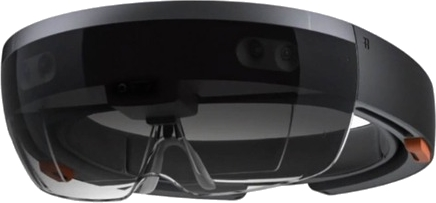
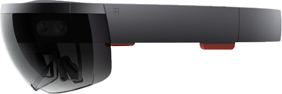
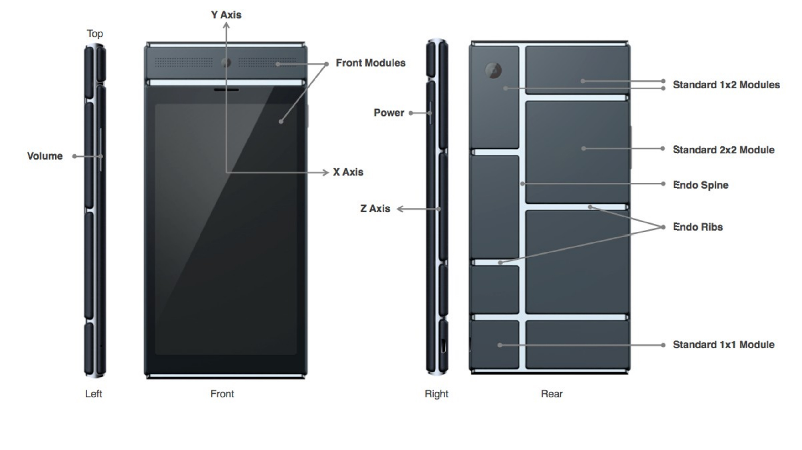
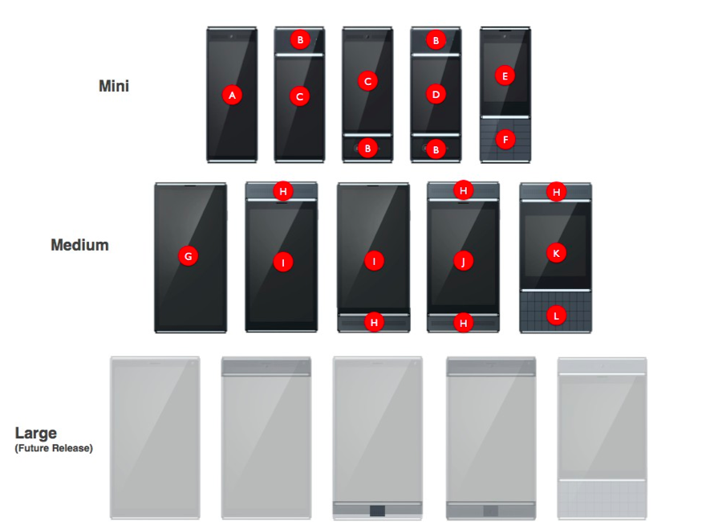
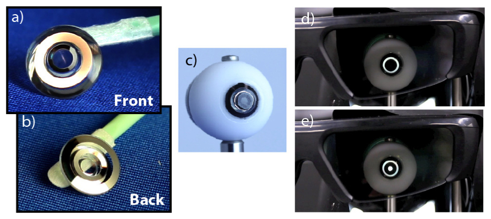
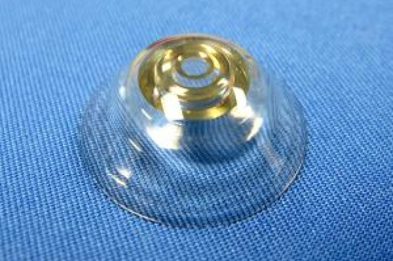
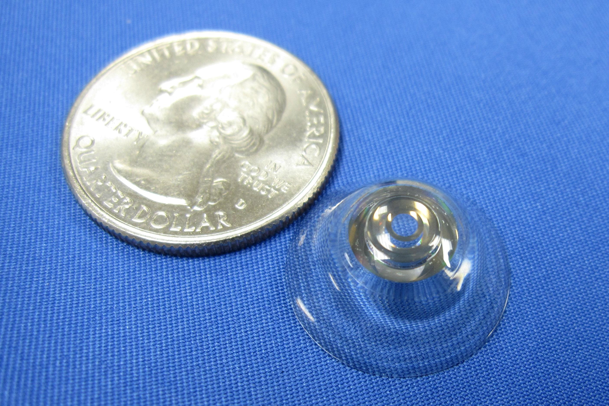
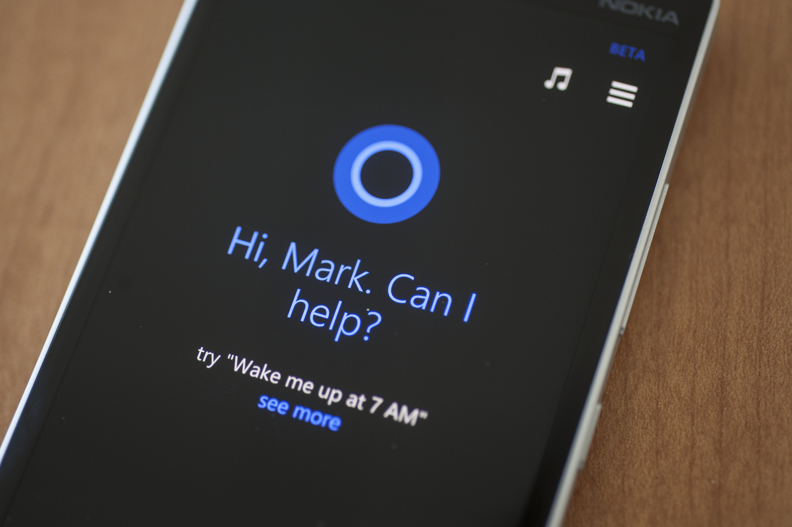
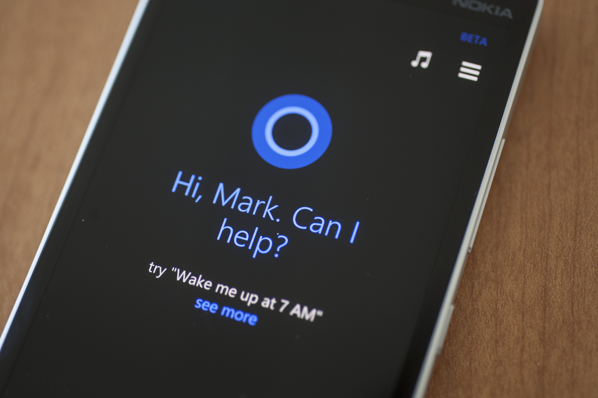

Microsoft Hololens
Project Ara
Zoomable Contact Lens
Smart Machines
What Is It?
The Microsoft Hololens is a pair of smart glasses designed by Microsoft. It works with Windows 10 to bring holograms to the real world. Others people don't see what you see, but only see you wearing glasses. The glasses project holograms onto its translucent lenses, where hand gestures can be used to interact with the projections. The glasses overlay images over the real world.
How Does It Work?
The glasses track your movements and where you are looking at, and blasts light at your eyes to compute where you are looking at. It also has a on-board computer that does all the processing, and will allow features to work alongside a Windows 10 operating system on a computer. It has an array of sensors on it that allow you to move around and see every aspect of the item you are trying to look at. The glasses also have a camera so that it knows where items are, and can place holograms on or in them.
Watch A Video
Images

What Is It?
Project Ara, by Google, is a modular smartphone that allows the user to customise and personalise each part of the phone to his or her own liking. These parts are not developed by Google, but instead other companies, and are installed as modules into the phone, fitting into a slot in the phone. These modules include a better camera, phone or speaker. The interchangeable parts promote the idea of recycling old modules instead of throwing away a whole phone to upgrade a specific part in mind, hence reducing the amount of mobile phone waste each year.
How Does It Work?
Project Ara is designed like an endoskeleton, where modules are inserted into slots in the phone. Currently, there is a limit to the maximum number of modules installed at any one time, however this will likely change. The module installation and usage is ‘plug and play’, meaning that the modules will function as soon as they are inserted. The project is currently set on improving its third prototype, named Spiral 3, which allows 20-30 modules, and is currently being piloted in Puerto Rico.
Watch A Video
Images
 What Is It?
The Zoomable Contact Lens are a pair of contact lenses, that can zoom in up to 2.8x maginification. They are developed by École polytechnique fédérale de Lausanne, a Swiss company, to help people with age-related macular degeneration. The product is still in its prototyping stage. DARPA, America's defence research department, is funding part of the developement of contact lens, to give America's fighter pilots and soldiers apparent 'super vision' in combat.
How Does It Work?
The contact lens contain multiple mirrors inside it, reflecting light to zoom. The lenses have air channels, 0.1mm thick, to allow the wearer's eyes to breathe. As the lenses are still being developed, a comfortable shape has not been made yet, hence they cannot be worn for too long without the eyes becoming irriated. They are currently made out of hard plastic, however the use of soft plastic is being researched and tested. The lens is activated with the wink of an eye.
Images
  What Are They?
Smart Machines are computing systems that are able to perform problem solving and decision making, without human input. They are able to accomplish what was previously thought to be only accomplishable by humans. Apple's Siri, and Microsoft's Cortana, intelligent digital assistant software, are two examples of these smart machine technologies. They use data from the surrounding environment, the internet, as well as habits to suggest and/or perform tasks and actions.
Take it a step further, and you have Google's Self-Driving Car. A true smart machine, this technology is an unmanned car that utilises various sensors placed around its body to navigate around roads. With safety features to avoid crashing and casualties, it is truly a smart machine. In the future, with technologies utilising information from their surroundings, truck driving, forklifting, carrying heavy equipment, and other tasks can be performed with increasing accuracy and efficiency.
How Do They Work?
Smart Machines work in many different ways, depending on their function and purpose. For instance IBM's Watson uses input data and information from its surroundings to respond to questions through advanced algorithms. Siri and Cortana provide task assistance and voice functions through previously issued questions or commands. And the Self-Driving Car uses sensors around the car as well as its inbuilt GPS to determine when and where to go.
Videos
Images

 
